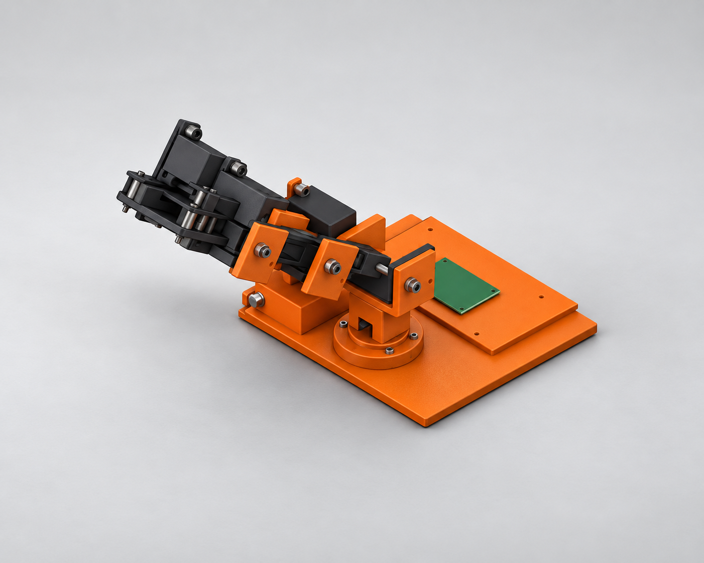
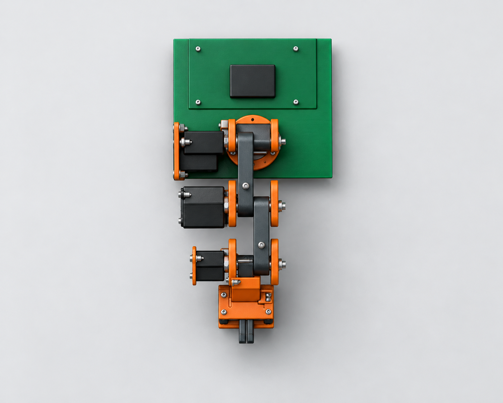
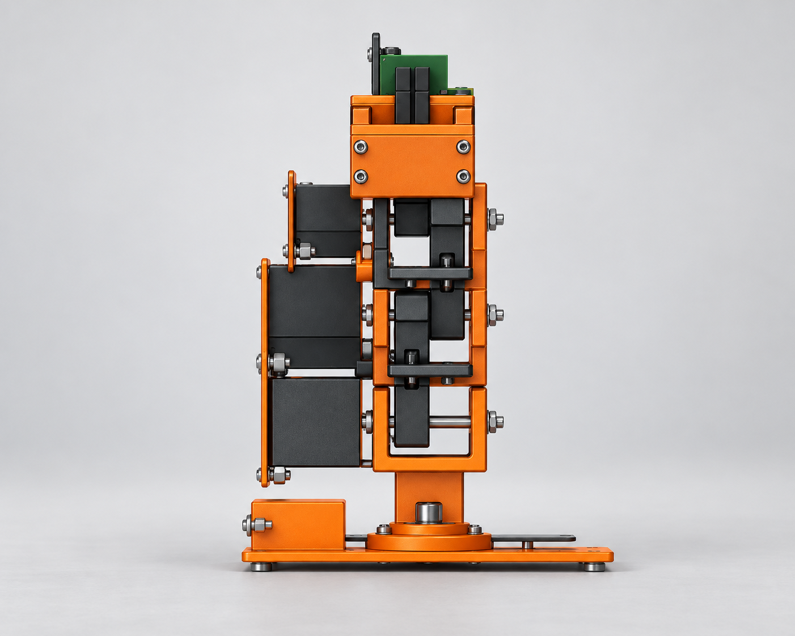

Robot Arm Revision 7 — Digital Design Review
Intent and controlled change
Revision 7 was intended to preserve revision-6 B-rep geometry, identities, placements, hardware, contacts, clearances and kinematics while changing only print metadata and source comments. The editable articulated assembly uses millimetres, degrees and a right-handed frame (+X right, +Y rear, +Z up). Rendered pixels provide qualitative presentation evidence only and do not prove geometry or dimensions.
Measured dimensions and features
| Feature | Actual result | Disposition |
|---|---|---|
| Assembly | 110 instances; 110 solids; 831 faces; 783,118.7195908069 mm³; bounds 200.0 × 385.5781003319563 × 287.76533231295184 mm; 0 component errors | Counts pass; whole-assembly bounds are not the stationary footprint. |
| Printed register | 18 definitions; 28 instances. Tray maximum mapped envelope 200 × 180 × 10 mm; all mapped envelopes ≤220 × 220 × 250 mm. | PASS |
| Links | Shoulder–elbow 100.0 mm; elbow–wrist 90.0 mm; sections 18 × 18 mm; planes −9.4/+9.4 mm. | PASS, ±0.1 mm spacing |
| Main pivots | Ø5.4 mm printed bores; Ø5.0 mm shafts; derived radial gap 0.20 mm; −X pitch and +Z yaw axes. | PASS, minimum 0.19 mm |
| Electronics | PCB 160 × 90 × 1.6 mm; CM5 envelope 55 × 40 × 4.621 mm; four 6 mm standoffs at specified XY coordinates. | Geometry PASS; physical interfaces unverified |
| Motion | Five states: 5,995 pairs/state, 0 issues. Path: 33 samples, 8.0 s, 0 new collisions. | PASS for bounded checks only |
| FDM screen | One whole-design run; 2 errors and 25 warnings. Purchased standoff 1.15 mm and washer 1.00 mm failed the 1.2 mm thin-wall screen. | PASS for required run; not manufacturing approval |
Native CAD captures


Presentation renderings



Pairwise presentation evaluation
| Pair | Feature count and silhouette | Camera | Appearance |
|---|---|---|---|
| Isometric | Base, yaw, articulated links, servo blocks, pivots, gripper and board region correspond qualitatively; no exact count claim. | Matching oblique family; crop/scale differs. | Broadly compliant. |
| Top | Major categories and longitudinal silhouette correspond; holes and fasteners are visible but not proven one-for-one. | Top-down orientation agrees. | Noncompliant green tray/base panel. |
| Front | Base, stacked arm, servo blocks, yokes, shafts and gripper correspond qualitatively. | Frontal orientation agrees. | Broadly compliant. |
Requirement-by-requirement results
| ID | Status | Actual evidence/result |
|---|---|---|
| R01 | UNVERIFIED | Global counts, faces, bounds and volume match revision 6, but no per-instance coincident-body/topology diff or kernel tolerance exists. |
| R02 | PASS | 110 identifiable instances/solids; 18 printed definitions; 28 printed instances; 0 errors; editable joints retained. |
| R03 | PASS | mm, degrees and specified right-handed frame recorded. |
| R04 | UNVERIFIED | Tray is 200 × 180 mm; complete explicitly selected stationary-group bounds were not measured. |
| R05 | UNVERIFIED | PCB bounds and rearward placement observed; five reserved-bay intersection volumes were not reported. |
| R06 | PASS | 100.0/90.0 mm spacings, 18 × 18 mm sections and −9.4/+9.4 mm planes. |
| R07 | PASS | Ø5.4/Ø5.0 mm interfaces yield 0.20 mm radial gap; axes and through-lengths inspected. |
| R08 | UNVERIFIED | Five states and sampled path show no issues, but every path-sample minimum printed-pair distance was not reported. |
| R09 | FAIL | Four unique cradle definitions, not five. Bodies are single solids, but isolated boss-web volumes were not measured. |
| R10 | FAIL | 25 M3 bolts and 25 nuts; 1 yaw shaft, 3 pitch shafts, 8 washers and 4 M5 nuts. Explicit hardware-pair contacts and complete measured stack order are absent. |
| R11 | PASS | Axis line distances 0.0 mm; directions, limits and poses match; symmetric gripper opens 25 mm. |
| R12 | PASS | Five clear states; 33/33 samples over 8.0 s; zero new collisions. |
| R13 | PASS | All 18 independently represented definitions fit the mapped 220 × 220 × 250 mm build volume. |
| R14 | PASS | One identity-classified whole-design FDM screen completed; orientation limitations retained. |
| R15 | PASS | Board, CM5, standoffs and 3 MG996R/2 MG90S reference envelopes match specified geometry. |
| R16 | UNVERIFIED | No new-revision printable export manifest exists to prove purchased-body exclusion. |
| R17 | FAIL | Exactly six required views exist; native captures pass. Top studio view has incorrect green tray appearance. |
| R18 | FAIL | Silhouette, feature categories and cameras broadly agree, but requested appearance does not agree in the top pair. |
| R19 | FAIL | Six images, identity, measurements, sequence, directions and limitations are present; exact per-definition quantities, complete stack/contact register and export manifest remain unavailable. |
| R20 | PASS | No prohibited manufacturing, physical-fit, strength, payload, stability, continuous-collision, powered-operation, publication or acceptance claim is made. |
Register, preparation and limitations
Printed definitions: tray (−Z); arm_foot, turntable, yoke, pitch_yoke, yoke_mount, guide_post, guide_cover (+Z); upper_arm, forearm, palm, finger, retainer_large, retainer_small, saddle_large, saddle_small, saddle_yaw, saddle_gripper (+X). Total: 18 definitions/28 instances. Tower is integral with turntable. Use removable support for tower access, yoke bores/cheeks and negative-X saddle cavities/webs; clean bores and trial-fit. Exact per-definition quantities were not supplied by validation.
Export preparation: only the 18 revision-7 printed definitions are eligible for later independently oriented STL acquisition and validation. Purchased servos, boards, horns, shafts, fasteners and standoffs must be excluded; this remains unverified until a manifest exists.
Assembly sequence: clean parts; trial-fit saddles/bores; install standoffs and PCB; join tray/foot, turntable/tower and yaw stack; install shoulder, upper arm, elbow, forearm, wrist, palm and gripper; fit servo references and outward hardware; perform unpowered manual checks.
Unresolved: native topology equality; stationary footprint; five bay intersections; all sampled minimum gaps; fifth cradle definition and boss-web volumes; explicit hardware contacts/stack order; rendering color correction; export manifest; servo/horn fit, inventory, connectors, cables, torque, transmission, payload, strength, stability, slicing, support volume, print quality, physical assembly and energized operation. The bounded tests do not establish continuous collision freedom or manufacturing readiness.